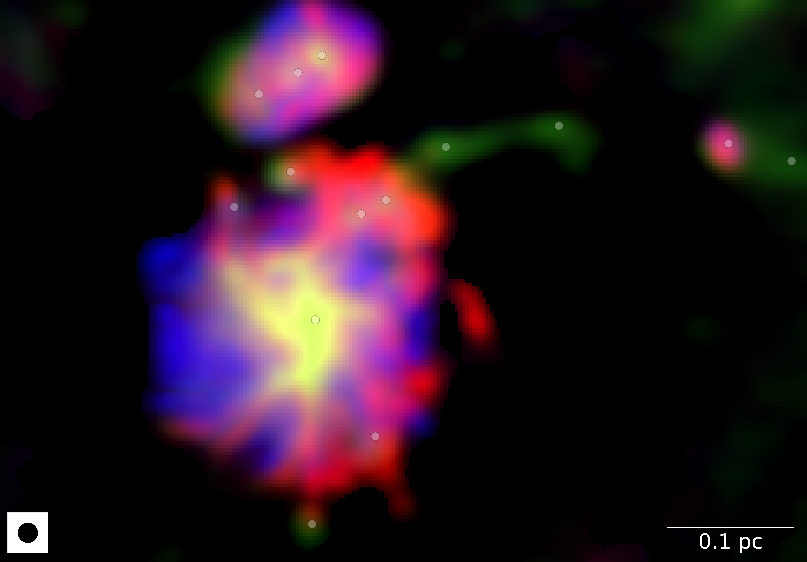
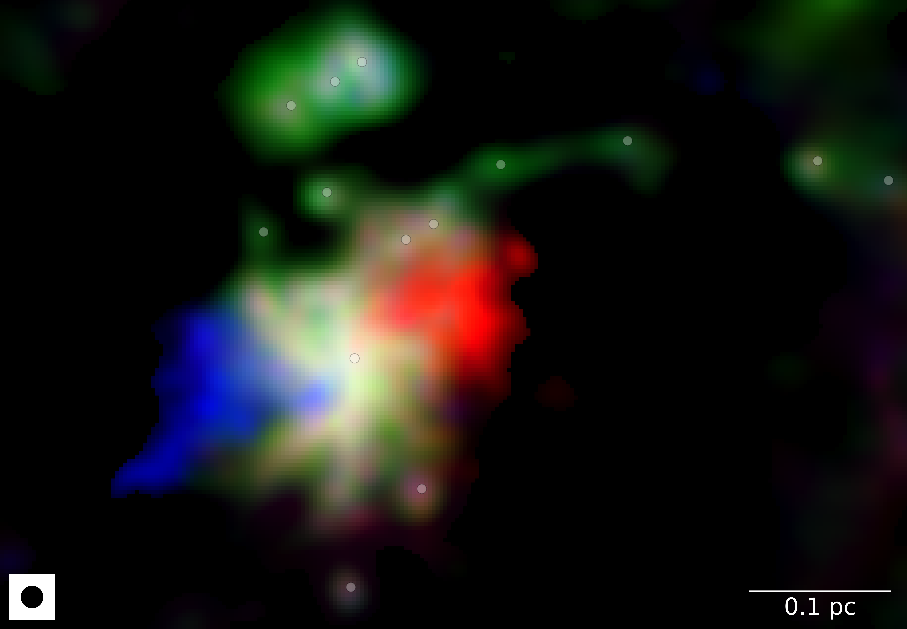
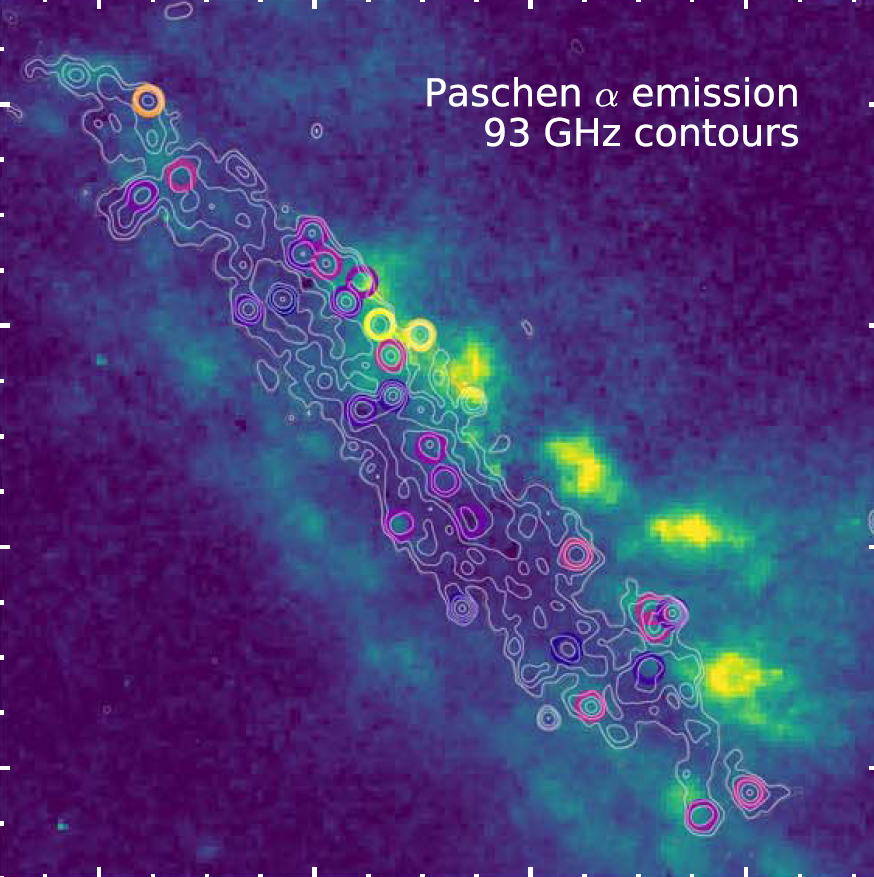
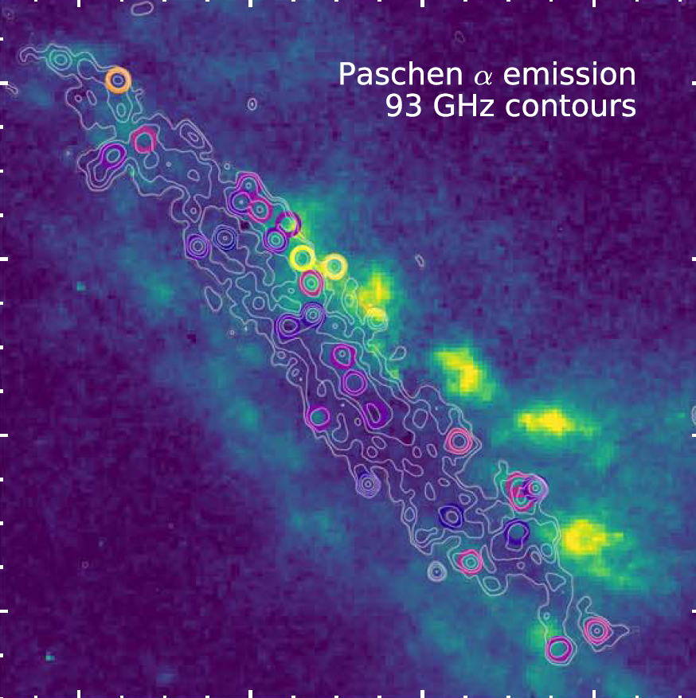

- To move slides, use the arrow keys or swipe on your mobile device
- To go to full screen, press "f"
- To print as PDF, go to this URL:
?print-pdf, then print (warning: may be slow and not work on all browsers).
- To see an overview, press esc
Hot Cores and the CMF
with the SgrB2 team and students
Desmond Jeff and Nazar Budaiev
Slides available at
https://keflavich.github.io/talks/ascona2022_feedback_crs.html
Our own Galaxy's center, the CMZ, has denser gas than the Galactic average
Cold Dust
Hot, ionized gas
Hot dust/PAHs
Hot, ionized gas
Hot dust/PAHs
The proto-Super Star Cluster Sgr B2 is forming in the CMZ
The proto-Super Star Cluster Sgr B2 is forming in the CMZ
Sgr B2 N is rapidly accreting...
...and driving a powerful outflow

Schwörer+ 2021 (subm.)
Ṁ(out) =0.044 M⊙ yr -1
SSCs are common in starburst nuclei and drive galactic outflows
NGC 253 protoclusters (Leroy+2018)
NGC 4945 protoclusters (Emig+2020)

 
